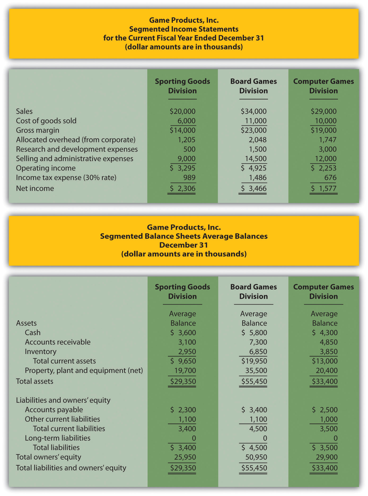
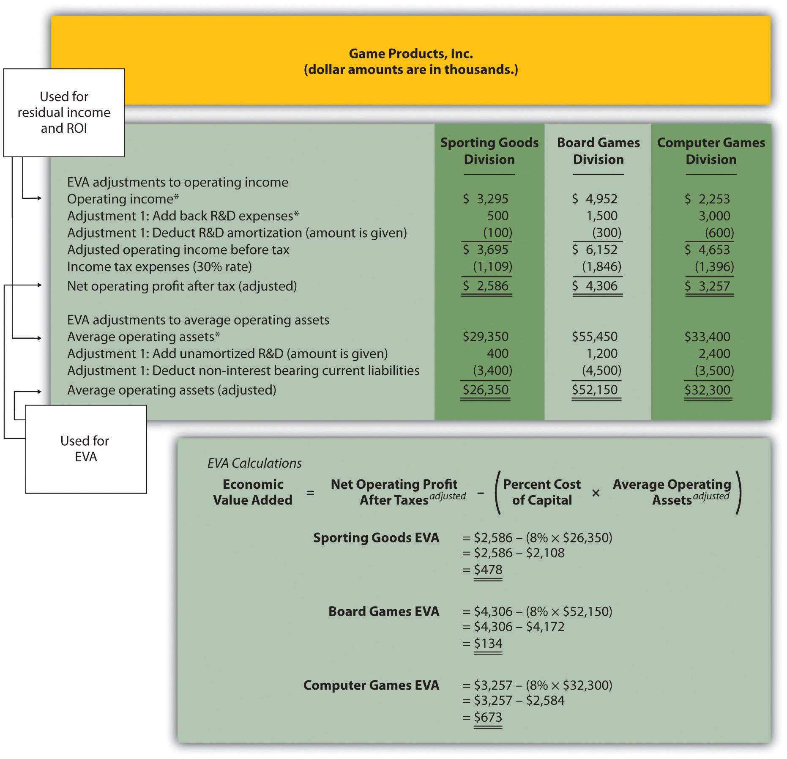

Question: Another measure of performance similar to residual income (RI) is called economic value added. What is economic value added, and how is it used to evaluate divisions?
Answer: Economic value added (EVA)Similar to RI, and it is defined as Economic value added = Net operating profit after taxesadjusted − (Percent cost of capital × Average operating assetsadjusted) was created and trademarked by Stern Stewart & Company, a management consulting firm, and is defined as follows (additional information can be found at Stern Stewart & Company’s Web site: http://www.sternstewart.com).
Although the calculation is similar to RI, adjustments are made to the financial information to better reflect the economic results of the division. Stern Stewart & Company created EVA to provide financial information without the “anomalies” that result from following U.S. GAAP. One example of an anomaly is the expensing of research and development (R&D) costs even though R&D breakthroughs often benefit companies in future years.
There are two distinct differences in calculating EVA compared to RI. First, operating profit is calculated net of income taxes. Finding operating income after taxes simply requires deducting income taxes from operating income. Second, adjustments are made to operating income and average operating assets. Although more than 150 possible adjustments can be made, most firms limit adjustments to 15 or less.
Three examples of adjustments to be considered when using EVA are related to research and development (R&D), advertising, and noninterest bearing current liabilities.
These three items are provided as examples of adjustments proposed by EVA advocates. However, the adjustments made depend on the organization since EVA calculations are modified to fit the needs of the organization.
Question: How is EVA calculated for the divisions at Game Products, Inc.?
Answer: Figure 11.9 "Income Statement and Balance Sheet Information (Game Products, Inc.)" provides the segmented income statements and segmented balance sheet information for each division. These amounts were used earlier in the chapter to calculate segmented net income, ROI, and RI. Notice that research and development costs are now shown as a separate line item on the income statement, and average balances are shown on the balance sheet rather than beginning and ending balances. (Average balances are simply beginning balances plus ending balances divided by two.)
To simplify our analysis, we make only two adjustments—one for research and development and one for noninterest bearing current liabilities. The management believes research and development activities benefit future periods and would like to capitalize R&D costs and amortize these costs over several years. In addition, all current liabilities are noninterest bearing liabilities and as such will be deducted from average operating assets.
The impact of these two adjustments that must be made to the financial information presented in Figure 11.9 "Income Statement and Balance Sheet Information (Game Products, Inc.)", described as follows, is shown in Figure 11.10 "EVA Calculations (Game Products, Inc.)".
Adjustment 1. On the balance sheet, capitalized R&D costs will increase average operating assets by the unamortized amount of $400,000 for Sporting Goods, $1,200,000 for Board Games, and $2,400,000 for Computer Games. On the income statement, R&D expense for the year shown in Figure 11.9 "Income Statement and Balance Sheet Information (Game Products, Inc.)" is added back to operating income; R&D amortization expense for one year will be deducted as an expense. R&D amortization expense for the year is $100,000 for Sporting Goods, $300,000 for Board Games, and $600,000 for Computer Games. (Note for the purposes of this chapter, amortization expense amounts will be given. Detailed calculations are left to more advanced cost accounting textbooks.)
Since net operating profit after taxes (NOPAT) is used in the EVA calculation, we must remember to calculate NOPAT after making the R&D adjustments. Also, assume this is the first year calculating EVA. Thus Game Products has decided not to make any adjustments related to previous years’ R&D expenditures.
Figure 11.9 Income Statement and Balance Sheet Information (Game Products, Inc.)
Figure 11.10 "EVA Calculations (Game Products, Inc.)" shows the adjustments, and the resulting EVA calculation for each division. Assume the company’s cost of capital rate is 8 percent. This is the same rate that was used for calculating RI.
Figure 11.10 EVA Calculations (Game Products, Inc.)
*From Figure 11.9 "Income Statement and Balance Sheet Information (Game Products, Inc.)".
Question: How did each of the three divisions perform using EVA as the measure?
Answer: As shown at the bottom of Figure 11.10 "EVA Calculations (Game Products, Inc.)", all three divisions have positive EVA amounts, which indicates all three have NOPAT (adjusted) in excess of each division’s cost of investment funds (adjusted).
Recall from the example in Figure 11.8 "RI Calculations (Game Products, Inc.)" that Computer Games was the only division with negative RI. This negative amount turns to a positive amount using EVA mainly because research and development costs are capitalized and amortized over future years rather than expensed as incurred. Because the Computer Games division had significant research and development costs, and these costs were backed out and recorded as an asset using EVA, NOPAT (adjusted) increased significantly. This caused the EVA amount for Computer Games to become positive.
Question: While EVA is no doubt a popular method for evaluating investment centers, and companies as a whole, there are weaknesses in its approach. What are these weaknesses?
Answer: As stated earlier, EVA is similar to RI except adjustments are made to operating income and average operating assets to offset accounting anomalies created by U.S. GAAP. Critics of EVA argue that U.S. GAAP was established for a variety of reasons, one of which was to provide a set of reasonable and objective accounting rules to be followed when recording economic events. Modifying U.S. GAAP to calculate EVA strays from the objectivity provided by U.S. GAAP.
For example, U.S. GAAP requires R&D and advertising costs to be expensed in the period incurred because it is very difficult and subjective to estimate the future benefit these activities may provide. EVA adjustments described earlier for R&D and advertising costs depart from U.S. GAAP. EVA recommends that these costs be capitalized and amortized over the useful life of the activity. This leads to different interpretations of what the useful life should be. Managers now have an incentive to stretch useful lives out as far as possible to minimize amortization expense taken each period.
As with any performance measure, EVA has advantages and disadvantages. The key is to develop a measure that promotes behavior desired by top management and to provide consistency in evaluating managers.
EVA is simply an extension of RI. Adjustments are made to operating income and average operating assets. EVA is calculated as follows:
This is a continuation of the Kitchen Appliances example used in previous review problems. Top management of Kitchen Appliances has decided to use EVA as a performance measure for its division managers. The cost of capital rate is 6 percent.
Assume management will make three adjustments to calculate EVA as follows:
Segmented income statements and balance sheet average amounts are presented next.
Solution to Review Problem 11.7
The EVA calculation is as follows: